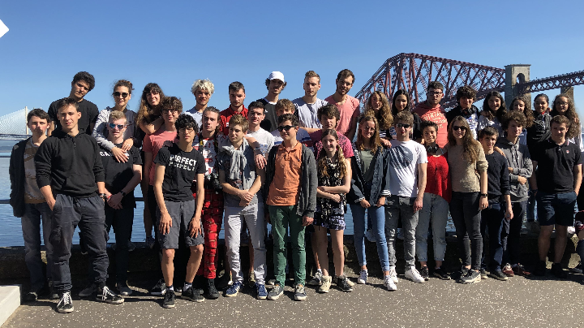
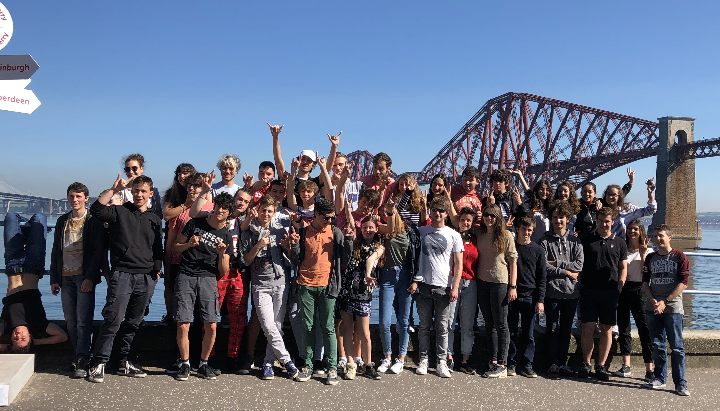
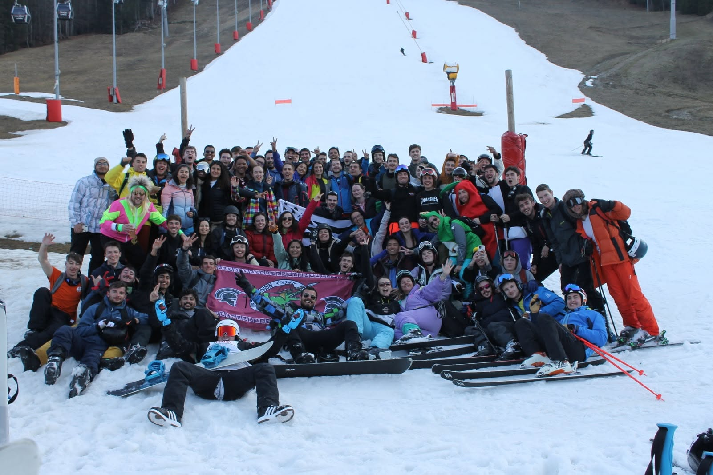

Lyon → Nancy → Cincinnati
Un parcours scientifique,
puis international
A scientific path,
then an international one
Prépa à Lyon, diplôme d’ingénieur à Nancy, puis Master of Engineering aux États-Unis : une progression vers plus d’autonomie, d’embarqué et de software engineering.
Preparatory classes in Lyon, engineering degree in Nancy, then a Master of Engineering in the US: a path toward more autonomy, embedded work, and software engineering.
01
Lycée Jean Perrin
Lyon · 2018 — 2020
Lyon · 2018 — 2020
MPSI puis PSI. C’est là que se sont installées les bases : maths, physique, raisonnement, vitesse d’exécution et résistance au volume de travail.
MPSI then PSI. This is where the foundations were built: maths, physics, reasoning, execution speed, and the ability to handle a sustained workload.
Un repère externe DAUR 2025 le situe autour de la 33e place en MP — un signal de niveau, pas un classement officiel unique.
An external DAUR 2025 marker places it around 33rd in MP — a level signal, not a unique official ranking.
Source DAUR 2025 → DAUR 2025 source →
En MPSI, un voyage de classe en Écosse, à Édimbourg : une parenthèse plus légère dans une année très dense.
During MPSI, a class trip to Scotland, in Edinburgh: a lighter pause in an otherwise intense year.
TIPE : influence de la pression sur la flottabilité — vidéo d’expérience →
TIPE: how pressure affects buoyancy — experiment video →


02
ENSEM — Université de Lorraine
Vandœuvre-lès-Nancy · 2020 — 2023
Vandœuvre-lès-Nancy · 2020 — 2023
Ingénieur — Systèmes numériques
Engineer — Digital systems

Campus de Brabois, au-dessus de Nancy. Formation publique d’ingénieur avec un axe fort sur les systèmes numériques, l’électronique, l’automatique et le lien avec l’industrie.
Brabois campus above Nancy. Public engineering school with a strong focus on digital systems, electronics, control, and industrial ties.
Repères publics récents, cités par l’école : 34e sur 121 écoles d’ingénieurs au classement 2026 de L’Usine Nouvelle, et Top 5 en numérique / électronique / télécommunications.
Recent public markers, as cited by the school: #34 out of 121 engineering schools in the 2026 L’Usine Nouvelle ranking, and Top 5 in digital / electronics / telecommunications.
Source ENSEM / Usine Nouvelle → ENSEM / Usine Nouvelle source →
03
University of Cincinnati
Cincinnati, Ohio · Fall 2022 · double diplôme 2022 — 2023
Cincinnati, Ohio · Fall 2022 · dual degree 2022 — 2023

Master of Engineering en Computer Science, College of Engineering and Applied Science, avec GPA 3.8/4.0. Une année très formatrice, en anglais, dans un cadre plus professionnalisant et très orienté software engineering.
Master of Engineering in Computer Science, College of Engineering and Applied Science, with a 3.8/4.0 GPA. A very formative year in English, in a more practice-oriented and software-engineering focused environment.
Repères publics U.S. News 2026 (graduate) : #105 en engineering et #115 en computer science.
Public U.S. News 2026 graduate markers: #105 in engineering and #115 in computer science.
Source U.S. News engineering → U.S. News engineering source →
Stack
Stack
Compétences
Skills
Langages
Languages
Python · C / C++ · Java · C# · TypeScript · SQL · MATLAB · Bash
Web & data
Web & data
HTML / CSS · JavaScript · Flask · REST · PHP · Git · Agile / Scrum
Mobile
Mobile
Flutter · Dart · Expo Go · TypeScript · iOS · Android
Embarqué
Embedded
STM32 · ESP32 · UART · I2C · SITL · PicoScope
IA
AI
Cursor · NanoEdge AI Studio · matching PPM / BPM
Cursor · NanoEdge AI Studio · SPM / BPM matching
Langues parlées
Spoken languages
Français (natif) · Anglais C1 · Espagnol B2
French (native) · English C1 · Spanish B2